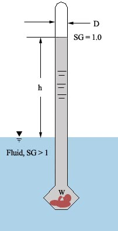
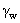
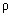

Brightness of Brain Contest
Problem
F
Time limit: 1 second Memory: 16 MB |
|
Working With Specific Gravity |
The Problem
You may have heard the name of Archimedes. It is
said that, Archimedes discovered the buoyancy laws when asked by the King
Hiero of Syracuse to determine whether his new crown was pure gold or not.
Archimedes was threatened to be punished if he was unable to do so. One day
he was
bathing and thinking about the way to solve the problem. When he immersed
himself into
a fully poured bath tub, some water overflowed. Then suddenly he started shouting
"Eureka, Eureka" and ran out nude to the king, because he solved the problem
from that event. Since then the law of
buoyancy was established.
The laws of buoyancy that was discovered by Archimedes
in the third century B.C., which are :
- A body immersed in a fluid experiences a vertical buoyant force equal
to the weight of the fluid is displaces.
- A floating body displaces its own weight in the fluid
in which it floats.
Many complex analysis became possible after the discovery of these buoyancy laws.
In this problem we are considering a hydrometer, which is used to measure the specific
gravity of any fluid using the simple approach offered by the buoyancy laws.
A hydrometer floats at a level which is a measure
of the specific gravity of the liquid. The stem is of constant diameter `D',
and a weight in the bottom stabilizes the body to float vertically, as shown in
the figure. If the position h = 0 is pure water (SG = 1.0), find
'h'
or 'SG' whichever is not given in the input.

Figure 1 : A Hydrometer
The Input
Input consists of three line, each for any of the given four constants. Input
must have the value of 'W' in gram (0<W<=5000) and 'D' in
millimeter (0<D<=100). Along with these 'h' in centimeter
(0<h<=50) or 'SG' (0<SG<=25) may appear. Use
specific weight of water, =
9806.65 N/m3, Gravitational Acceleration g = 9.80665 m/s2, density of water,
= 1000 kg/m3.
The Output
For each set of input process the value of the variable ('h' or 'SG')
not present in the input. Output of 'h' should be in centimeter (cm).
Round each floating point value to two digit after the decimal place.
Sample
Input
W=3307.00
D=81.00
h=32.00
W=3665.00
D=74.00
SG=1.29
Sample
Output
SG=1.99
h=19.16
Suman Mahbub
Created: 16-03-2002
Updated: 14-12-2002